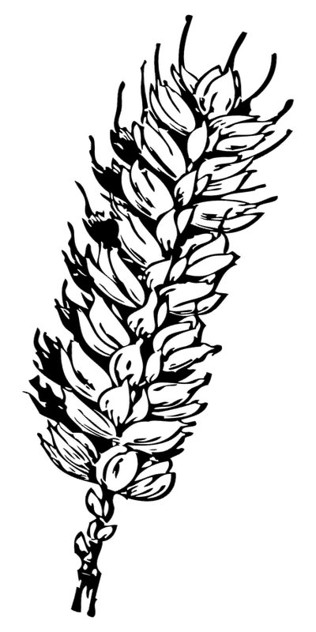

冬小麦生长模拟器
· 田园物语
AI 智慧农业 · 科普教学演示
学习空间
知识路径
模拟实验
第 1 天
晴天
15℃
🏆 成就
🌾 病害图鉴
🧬 品种图鉴
📊 学习档案
桌宠设置
🏠
🔊
🎬 教学导览
自动演示
冬小麦生长模拟器

播种期
→
出苗期
点击任意位置关闭
🌱 播种期
🔮 明日：…
🌊 根部积水！快通风控水
🌾 点击按钮照顾好你的小麦吧！
长按图片或截图保存（Win+Shift+S），分享给朋友吧！
💾 保存指引
关闭
📈 生长曲线 · 近40天
✕ 关闭
🖱️ 悬停曲线查看当日数值
🌾 病害图鉴 · 冬小麦全生育期病虫害
📷 拍照诊断
✕
💡 按冬小麦 8 个生育阶段组织 · 点击卡片查看真实症状图与防治知识 · 图片来自公开网络，仅供教学科普
🧬 品种图鉴 · 中国小麦产区与代表品种
✕
💡 从「产区气候 → 品种特性 → 栽培对策」的因果链认识小麦 · 查阅即计入知识点掌握度，相关题目会进入测验与复习
🌾 新手引导
跳过引导
下一步 →